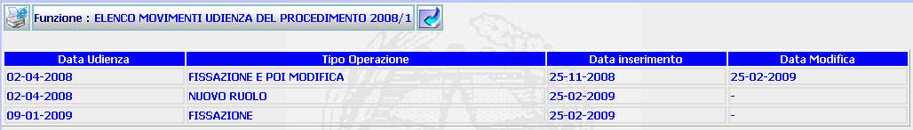

ELENCO MOVIMENTI UDIENZA: La funzione consente di visualizzare l'elenco delle udienze e dei relativi movimenti di un procedimento Sius, comprensivi della data di inserimento e di quella di modifica.
LE MASCHERE VIDEO
La funzione viene realizzata attraverso la maschera seguente in cui compare l'elenco dei movimenti udienza

COME FARE PER ...
| Per tornare alla maschera precedente l'utente deve selezionare il pulsante
|
PULSANTI
Sono
presenti i pulsanti
 e
e
 , facenti entrambi parte del gruppo di
pulsanti di "Uso Comune
, facenti entrambi parte del gruppo di
pulsanti di "Uso Comune